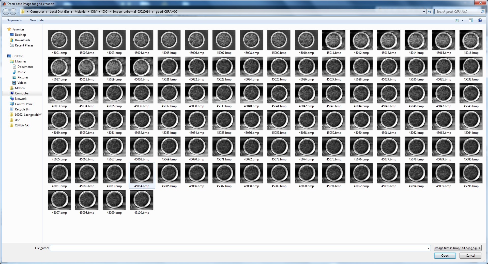
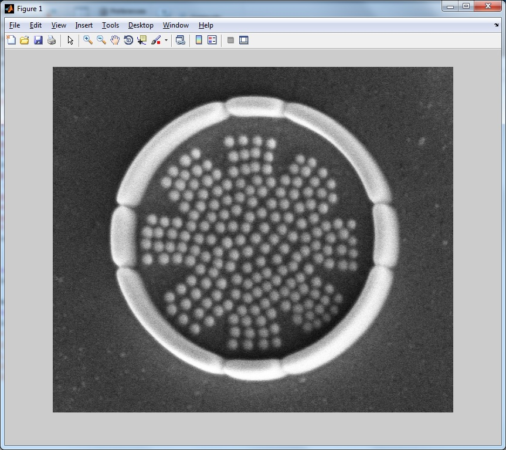
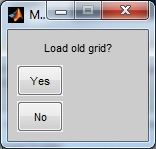
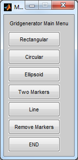
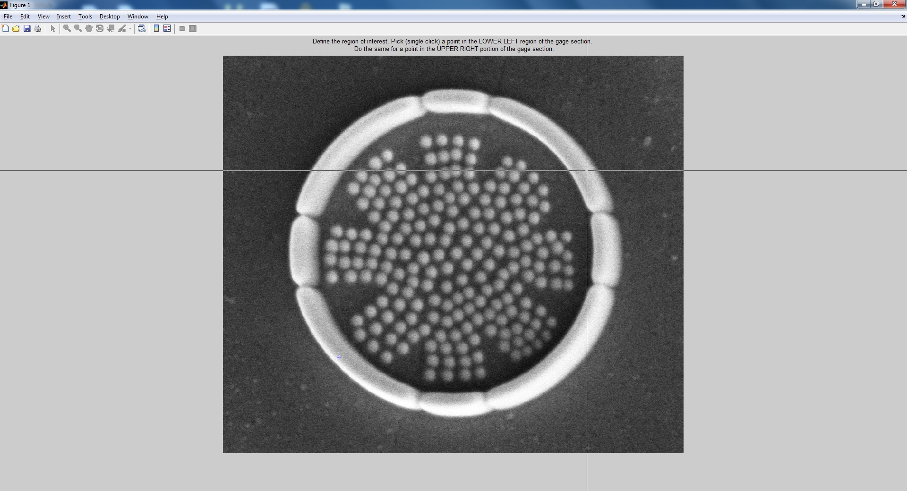
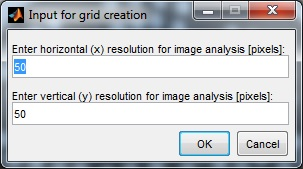
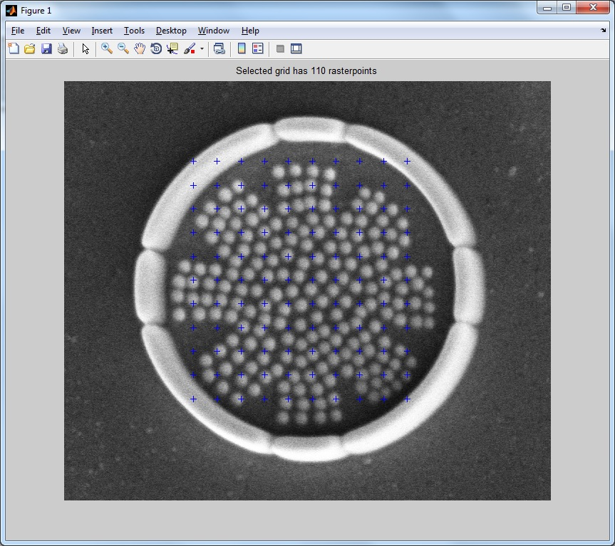
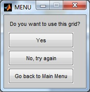

The grid marker positions can be defined by the user. Therefore, the marker positions in pixels are stored in a text based format, where the x-position is saved as 'gridx.dat' and the y-position is saved as 'gridy.dat'.
To start click the button 'Generate grid' in the main gui or type 'GenerateGrid;' at the MATLAB command line and press 'ENTER'. The following window should appear:

In this dialog, the first (base) image can be selected in which the grid will be created.
After selecting this base image, the image will be opened and a new dialog pops up to ask you if you would like to load an existing grid. If you want to create a new one, hit 'No' and go ahead.

You will get a new choice where you can select a shape for your grid.

The different types are a rectangular, an ellipsoidal or a circular grid, two markers, or a line of markers.
If you choose a rectangular grid type, the pointer will change from an arrow to a horizontal and a vertical line which will help you finding the right position. The idea is to click on the two diagonal positions (lower left, upper right), which will define the outer dimensions of a box containing the grid.

The selected box will be shown in the image and a dialog will pop up to ask you for the input of a raster point distance in x- and y-direction.

The code will now generate the chosen grid and plot it on top of the sample image. The last dialog will ask you if you want to use and save the generated grid ('gridx.dat' and 'gridy.dat'), if you want to try again or if you want to go back to the main menu.

If you are happy with the result, hit 'END' at the grid generator main menu.